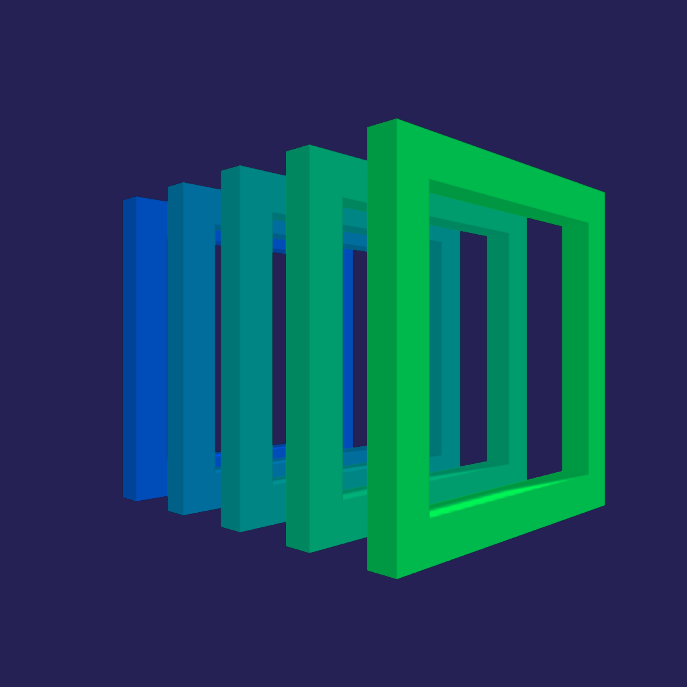

<mat-sidenav-container class="sidenav-container">
  <mat-sidenav #drawer class="sidenav" fixedInViewport
               [attr.role]="(isHandset$ | async) ? 'dialog' : 'navigation'"
               [mode]="(isHandset$ | async) ? 'over' : 'side'"
               [opened]="(isHandset$ | async) === false">
    <mat-toolbar style="display: flex; flex-direction: column;">
      
      <div class="icon-title">Process Manager</div>
    </mat-toolbar>
    <mat-nav-list>
      <a mat-list-item href="home" style="display: flex; justify-content: center; font-size: x-large;">Home</a>
      <a mat-list-item href="servers" style="display: flex; justify-content: center; font-size: x-large;">Servers</a>
      <a mat-list-item href="dataset" style="display: flex; justify-content: center; font-size: x-large;">Dataset</a>
      <a mat-list-item href="trash" style="display: flex; justify-content: center; font-size: x-large;">Trash</a>
    </mat-nav-list>
  </mat-sidenav>
  <mat-sidenav-content>
    <mat-toolbar class="mat-toolbar-header">
      <button
              style="margin-right: 5%;"
              type="button"
              aria-label="Toggle sidenav"
              mat-icon-button
              (click)="drawer.toggle()"
              *ngIf="isHandset$ | async">
        <mat-icon aria-label="Side nav toggle icon">menu</mat-icon>
      </button>
      <span>{{headerTitle}}</span>
    </mat-toolbar>
    <router-outlet></router-outlet>
  </mat-sidenav-content>
</mat-sidenav-container>
